9. Athletics Sport Lessons
9.1 Tools Assembly and Map Placement
9.1.1 Packing List
We need to prepare a map before athletics and place step and hurdle on the corresponding position on the map. All the required stuffs are as follow:
| Picture | Name | Quantity |
|---|---|---|
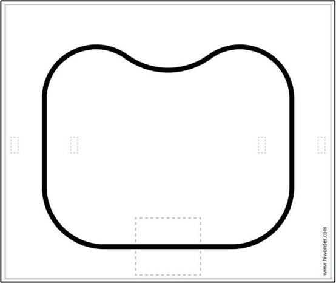 |
map | 1 |
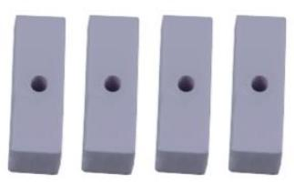 |
white hurdle accessory | 4 |
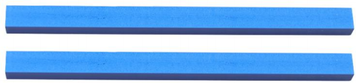 |
blue hurdle accessories | 2 |
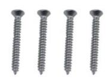 |
M3*25 flat head self-tapping screw | 4 |
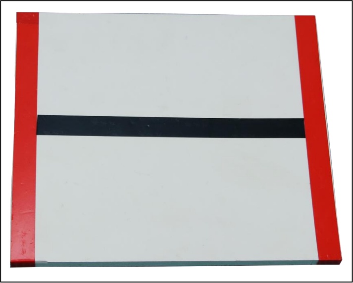 |
Stair (the electrical tape has been laid out) | 1 |
9.1.2 Step Assembly
Stick the corresponding tapes on the white step. The effect is as follow:
9.1.3 Hurdle Assembly
The assembly steps are as follow:
(1) Place the white hurdle accessory at the end of the blue hurdle accessory.
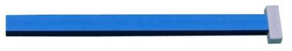
(2) Fix the white hurdle accessory to the end of the blue hurdle with M3*20 flat head self-tapping screw, as the figure shown below:
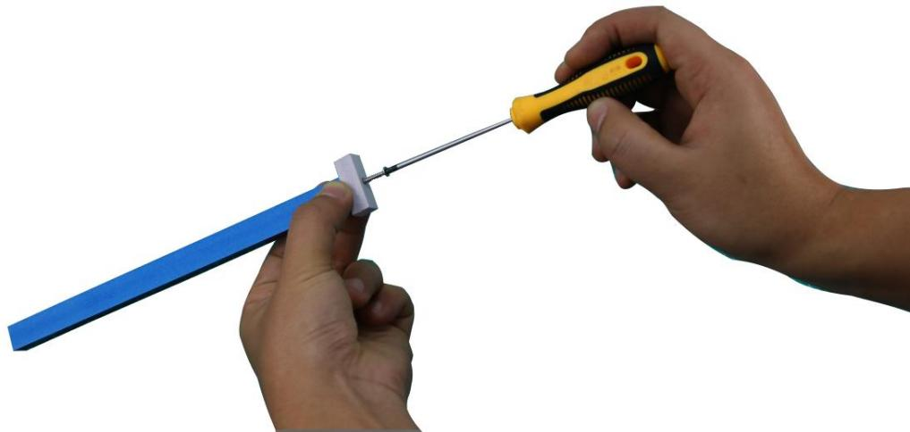
(3) Then, assemble the other white hurdle accessory, as the figure shown below:
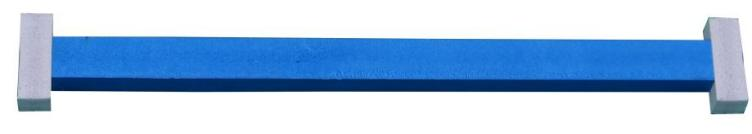
9.1.4 Map Placement
Before playing this game, let’s have a look at the map. The map is composed of three parts: ①step placement area ②hurdle placement area ③black track Its distribution is as follow:
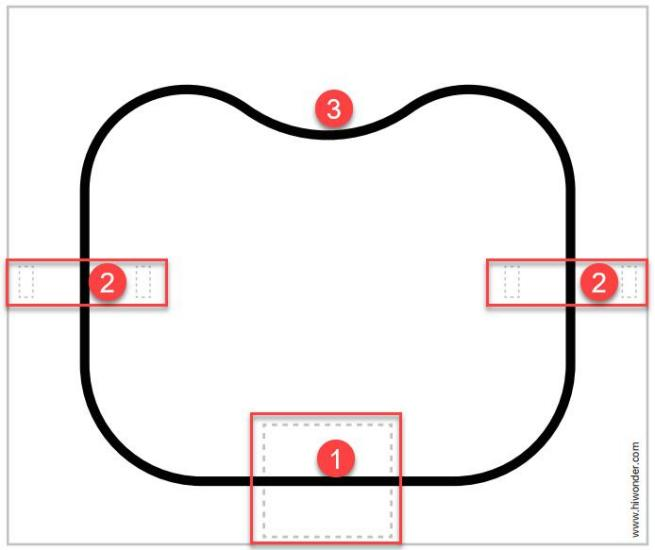
Step Placement Area
This area is used to place step that has been stuck with tape and the specific placement position is as follow:
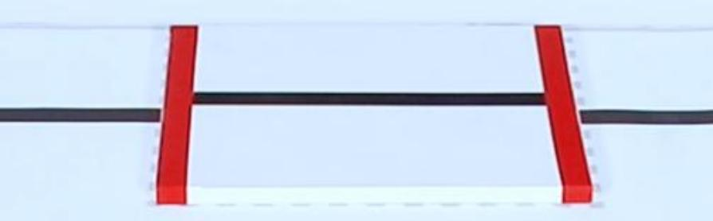
Hurdle Placement Area
This hurdle placement area is used to place two assembled hurdles and the specific placement position is as follows:
9.2 Go Up and Down Stair
9.2.1 Getting Ready
Place the map on a flat and smooth surface and set the step in the corresponding position.
The specific placement method for the map and tools can refer to the video and tutorial in 9.1 Tools Assembly and Map Placement.
9.2.2 Working Principle
The working principle of this this lesson is as follow:
The color is recognized through Lab color space firstly. Then convert RGB color into Lab color space, and proceed binarization, and dilation and erosion process to obtain the contour of the target color. Mark the target color with blue line, and obtain the coordinate parameter of the target to complete the color recognition.
Next, control the robot to move toward the step. According to the target coordinate to judge, if the robot is in the middle position of the target red line, it will be controlled to move forward and approach the step. When it reaches to the set range, the action of going up and down step will be executed. Otherwise, control robot to move left or right to the middle of the target, and then execute the action of going up and down the step.
The source code of the program is located in: /home/pi/TonyPi/Extend/athletics_course/stairway.py
9.2.3 Operation Steps
Note
The entered command must pay attention to case sensitivity and space.
(1) Turn on the robot and connect to Raspberry Pi desktop with VNC.
(2) Click the icon  on the upper left corner of the desktop to open command line terminal.
on the upper left corner of the desktop to open command line terminal.
(3) Input the following command and press Enter to locate the directory of game program:
cd /home/pi/TonyPi/Extend/athletics_course/
(4) Input command and press Enter to start the game:
python3 stairway.py
(5) If want to exit the game, press “Ctrl+C” in the LX terminal. Please try multiple times if fail to exit.
9.2.4 Project Outcome
Place the step within the TonyPi Pro’s vision range and it can adjust the position according to the recognized red line, and then slowly move forward and approach the step. When the robot approaches to the middle of step, it will go up and down step.
9.2.5 Function Extension
Modify Climbing Position
The program defaults that the robot starts going up and down step at a distance of 1000 from the line after the robot detects the red line on the step. If you want the robot to get closer to the stairs before starting to climbing, the data needs to be decreased; If you want the robot to move further away from the step before starting to climbing, the data needs to be increased. This section takes set the distance from the line at position 1020 where the robot starts climbing the stair. You can refer to the following steps to operate:
(1) Input the following command and press Enter to go to the directory of the game program:
cd /home/pi/TonyPi/Extend/athletics_course/
(2) Enter command and press Enter to open the game programming file:
vim Stairway.py
(3) Find the code framed in the following figure:
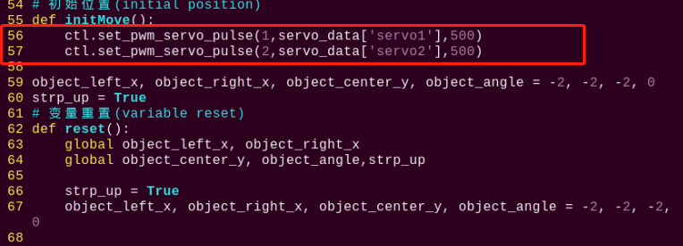
(4) Press “i” on keyboard. When “Insert” appears in the lower left corner, which means it has entered the editing mode.

(5) Modify the servo_data[‘servo1’] in ctl.set_pwm_servo_pulse (1,servo_data[‘servo1’],500) to 1020 as pictured:
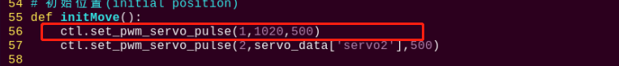
(6) After modification, press “Esc” and then enter “:wq” (Please note that the colon is in front of wq). Then press “Enter” to save and exit the modified content.
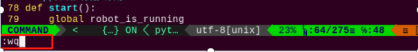
Modify Recognition Color
When making step, we put the red insulated rubber tape on it. The robot will climb the step after detecting the red line. Therefore, we can stick other colored tapes such as green, and let the robot climb the step after detecting the green line. The specific steps are as follows:
(1) Refer to the steps (1), (2) and (4) in folder “Modify Climbing Position”, enter the program editing interface to find the code framed in the following figure:
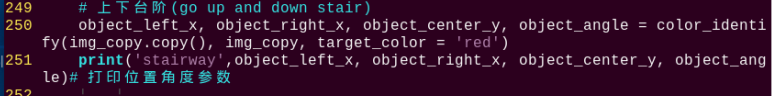
(2) Press “i” on keyboard to enter the editing mode. Modify red in object_left_x, object_right_x, object_center_y, object_angle = color_identify(img, img_copy, target_color = 'red') to green.
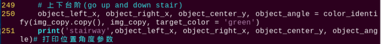
(3) After modification, refer to step (6) in “Modify Climbing Position” to save the modified code.
9.2.6 Program Analysis
The source code of this program is locate in: /home/pi/TonyPi/Functions/ColorDetect.py
Import parameter module
| Import module | function |
|---|---|
import sys |
The Python "sys" module has been imported for accessing system-related functions and variables. |
import os |
The Python "os" module has been imported, providing functions and methods for interacting with the operating system. |
import cv2 |
The OpenCV library has been imported for image processing and computer vision-related functionalities |
import time |
The Python "time" module has been imported for time-related functionalities, such as delay operations. |
import math |
The "math" module provides low-level access to mathematical operations, including many commonly used mathematical functions and constants. |
import threading |
Provides an environment for running multiple threads concurrently. |
import np |
The NumPy library has been imported. It is an open-source numerical computing extension for Python, used for handling array and matrix operations. |
import sensor.camera as camera |
Import camera library |
from common import misc |
The "Misc" module has been imported for handling recognized rectangular data. |
import common.ros_robot_controller_sdk as rrc |
The robot's underlying control library has been imported for controlling servos, motors, RGB lights, and other hardware. |
import common.yaml_handle |
Contains functionalities or tools related to processing YAML format files. |
from common.controller import Controller |
Import action group execution library |
Function logic
Based on the implementation effect, the logical flaw chart is as follows:
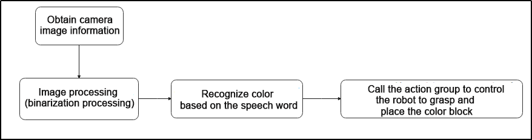
Capture image information through the camera, then process the image, specifically by performing binarization. At the same time, to reduce interference and make the image smoother, perform erosion and dilation operations on the image.
Then, based on the voice recognition result, control the robot to grasp and place the color block.
Program Logic and Related Code Analysis
From the program files, the logical flowchart of the program is as pictured:
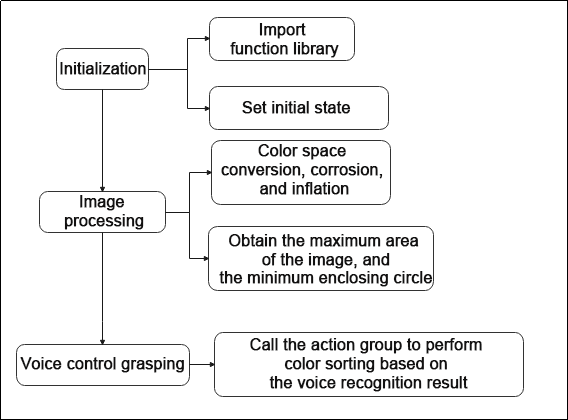
Based on the above diagram, the program’s logical flow mainly consists of image processing and voice control grasping. The following document will be written in accordance with the program logic.
Initialization
(1) Import function library
In this initialization step, the first task is to import the required libraries for subsequent program calls. For details on the imports, refer to “Import parameter module”.
4 5 6 7 8 9 10 11 12 13 14 15 16 17 | import os import sys import cv2 import time import math import threading import numpy as np import hiwonder.ros_robot_controller_sdk as rrc from hiwonder.Controller import Controller import hiwonder.PID as PID import hiwonder.Misc as Misc import hiwonder.Camera as Camera import hiwonder.ActionGroupControl as AGC import hiwonder.yaml_handle as yaml_handle |
(2) Set initial state
Set initial state, including the initial position of servo, color threshold, action group name, etc.
45 46 47 48 49 | def load_config(): global lab_data, servo_data lab_data = yaml_handle.get_yaml_data(yaml_handle.lab_file_path) servo_data = yaml_handle.get_yaml_data(yaml_handle.servo_file_path) |
55 56 57 | def initMove(): ctl.set_pwm_servo_pulse(1,servo_data['servo1'],500) ctl.set_pwm_servo_pulse(2,servo_data['servo2'],500) |
Image processing
(1) Image pre-processing
Resizing and Gaussian blur processing of the image.
121 122 | img_resize = cv2.resize(img, (size[0], size[1]), interpolation = cv2.INTER_CUBIC) GaussianBlur_img = cv2.GaussianBlur(img_resize, (3, 3), 3) |
cv2.resize(img_copy, size, interpolation=cv2.INTER_NEAREST) is an operation to resize the image.
The first parameter img_copy is the image to be resized.
The second parameter size is the target size.
The third parameter interpolation is the interpolation method, which is used to determine the pixel interpolation algorithm used for resizing.
cv2.GaussianBlur(frame_resize, (3, 3), 3) applies Gaussian blur to the image.
The first parameter frame_resize is the image to be blurred.
The second parameter (3, 3) is the size of the Gaussian kernel, indicating that the width and height of the kernel are both 3.
The third parameter 3 is the standard deviation of the Gaussian kernel, used to control the degree of blur.
(2) Color space conversion
Convert the BGR image to LAB image.
123 | frame_lab = cv2.cvtColor(GaussianBlur_img, cv2.COLOR_BGR2LAB) |
(3) Binarization processing
Use inRange() function in cv2 library to process binarization.
124 125 126 127 128 129 130 | frame_mask = cv2.inRange(frame_lab, (lab_data[target_color]['min'][0], lab_data[target_color]['min'][1], lab_data[target_color]['min'][2]), (lab_data[target_color]['max'][0], lab_data[target_color]['max'][1], lab_data[target_color]['max'][2])) |
The first parameter frame_lab is inputting image.
The second parameter lab_data[i]['min'][0] is the lower limit of the threshold.
The third parameter lab_data[i]['max'][0] is the upper limit of the threshold.
(4) Opening and closing operation
131 132 | opened = cv2.morphologyEx(frame_mask, cv2.MORPH_OPEN, np.ones((3,3),np.uint8)) closed = cv2.morphologyEx(opened, cv2.MORPH_CLOSE, np.ones((3,3),np.uint8)) |
eroded = cv2.erode(frame_mask, cv2.getStructuringElement(cv2.MORPH_RECT, (3, 3))) is the operation to perform corrosion on the binary image.
The first parameter frame_mask is the binary image on which morphological operations are to be performed.
The second parameter cv2.MORPH_OPEN specifies performing the opening operation.
The third parameter np.ones((3, 3), np.uint8) is the structuring element for morphological operations, used to define the shape and size of the operation. Here, a 3x3 matrix filled with ones is used as the structuring element.
The same logic applies to the closing operation function.
(5) Get the contour with the largest area
After completing the above image processing, it is necessary to obtain the contours of the recognized targets. This involves using the findContours() function from the cv2 library.
133 134 | contours = cv2.findContours(closed, cv2.RETR_EXTERNAL, cv2.CHAIN_APPROX_NONE)[-2] areaMax_contour = getAreaMaxContour(contours, area_min=50)[0] |
Take code contours = cv2.findContours(dilated, cv2.RETR_EXTERNAL, cv2.CHAIN_APPROX_NONE)[-2] as example:
The first parameter dilated is inputting image.
The second parameter cv2.RETR_EXTERNAL is the contour retrieval mode.
The third parameter cv2.CHAIN_APPROX_NONE)[-2] is the contour approximation method.
Find the contour with the largest area in the obtained contour. In order to avoid interference, you need to set a minimum value. The target contour is considered valid only if its area is greater than this value.
(6) Obtain the coordinates of the bottom and left/right sides of the contour, then perform mapping
Use the areaMax_contour function to obtain the coordinates of the bottom and left/right sides. Then, calculate the distances from the bottom to the left and right sides using the Euclidean distance formula.
139 140 141 142 143 144 145 146 | down_x = (areaMax_contour[areaMax_contour[:,:,1].argmax()][0])[0] down_y = (areaMax_contour[areaMax_contour[:,:,1].argmax()][0])[1] left_x = (areaMax_contour[areaMax_contour[:,:,0].argmin()][0])[0] left_y = (areaMax_contour[areaMax_contour[:,:,0].argmin()][0])[1] right_x = (areaMax_contour[areaMax_contour[:,:,0].argmax()][0])[0] right_y = (areaMax_contour[areaMax_contour[:,:,0].argmax()][0])[1] |
(7) Draw line contour
Use the OpenCV function cv2.line to draw a line segment on the image.
img_draw: the image on which the line segment is to be drawn.
(left_x, left_y) and (right_x, right_y): the coordinates of the starting and ending points of the line segment.
(255, 0, 0): the color of the line segment, which is blue here (in the BGR color space).
2: The thickness of the line segment.
162 | cv2.line(img_draw, (left_x, left_y), (right_x, right_y), (255, 0, 0), 2) |
Go up and down stair
(1) Detecting stair: detect the position of the stair using the value of object_center_y.
(2) Slightly adjust the position: calculate the center x coordinate object_x.
(3) Quick approach: If the center y coordinate is less than 320 and the difference between the center x and the robot’s center x is less than 150, the robot will execute a forward action to quickly approach the steps.
(4) Angle adjustment: based on the value of object_angle, the robot will decide whether to turn right or left to adjust the angle with the stair.
(5) Left and right adjustment: if the difference between the center x and the robot’s center x exceeds a certain threshold, the robot will execute a left or right movement action to adjust its lateral position.
(6) Slightly adjust the angle: within the range of 3 to 20 degrees, the robot will execute slightly adjustment to more precisely adjust the angle with the stair.
(7) At the center of the steps: If the object’s center y coordinate is between 320 and 430, the robot will execute a step forward action.
(8) Approaching the stair: If the object’s center y coordinate is greater than or equal to 430, the robot will wait for a period of time and check if the y coordinate is still greater than or equal to 430. If it is, the robot will emit an audible alert and execute a series of small step forward actions.
(9) Ascending and descending stairs: If the robot was previously flagged as ready to ascend the stairs (strp_up is True), it will execute the action to ascend the stairs and reset the strp_up flag. Otherwise, it will execute the default action to descend the stairs.
The purpose of this code is to enable the robot to automatically identify and handle stairs, whether ascending or descending, in a relatively safe and precise manner. Through a series of conditional checks and action executions, the robot can respond appropriately based on the position of the stairs and its own relative position.
174 175 176 177 178 179 180 181 182 183 184 185 186 187 188 189 190 191 192 193 194 195 196 197 198 199 200 201 202 203 204 205 206 207 208 209 210 211 212 213 214 215 216 217 218 219 220 221 222 223 224 | while True: if robot_is_running: if object_center_y >= 0: object_x = object_left_x + (object_right_x - object_left_x)/2 if object_center_y < 320 and abs(object_x - centreX) < 150: AGC.runActionGroup(go_forward) time.sleep(0.2) elif 20 <= object_angle < 90: AGC.runActionGroup(go_turn_right) time.sleep(0.2) elif -20 >= object_angle > -90: AGC.runActionGroup(go_turn_left) time.sleep(0.2) elif object_x - centreX > 15: AGC.runActionGroup(right_move) elif object_x - centreX < -15: AGC.runActionGroup(left_move) elif 3 < object_angle < 20: AGC.runActionGroup(turn_right) time.sleep(0.2) elif -5 > object_angle > -20: AGC.runActionGroup(turn_left) time.sleep(0.2) elif 320 <= object_center_y < 450: AGC.runActionGroup(go_forward_one_step) time.sleep(0.2) elif object_center_y >= 450: time.sleep(0.8) if object_center_y >= 450: board.set_buzzer(1900, 0.1, 0.9, 1) for i in range(2): AGC.runActionGroup(go_forward_one_small_step) time.sleep(0.5) if strp_up: AGC.runActionGroup('climb_stairs') strp_up = False else: for i in range(2): AGC.runActionGroup(go_forward_one_small_step) time.sleep(0.5) AGC.runActionGroup('down_floor') strp_up = True time.sleep(0.5) object_center_y = -1 |
Take code AGC.runActionGroup('grab_right') as example:
Use AGC.runActionGroup function to call action group. grab_right is the name of action group.
9.3 Hurdle Clearing
9.3.1 Getting Ready
Place the map on a flat and smooth surface and set the hurdle in the corresponding position on the map.
The specific placement method for the map and tool can refer to the video and file in 9.1 Tools Assembly and Map Placement.
9.3.2 Working Principle
The working principle of this this lesson is as follow:
The color is recognized through Lab color space firstly. Then convert RGB color into Lab color space, and proceed binarization, and dilation and erosion process to obtain the contour of the target color. Mark the target color with blue line, and obtain the coordinate parameter of the target to complete the color recognition.
Next, control the robot to move toward the hurdle. According to the target coordinate to judge, if the robot is in the middle of the target hurdle, it will move forward. When reaching to the set range, it will execute the hurdling action. Otherwise, control robot to move left or right to the middle of the target, and then execute the hurdling action.
9.3.3 Operation Steps
Note
The entered command must pay attention to case sensitivity and space.
(1) Turn on the robot, and connect to Raspberry Pi desktop through VNC.
(2) Click the icon  on the upper left corner of the desktop to open command line terminal.
on the upper left corner of the desktop to open command line terminal.
(3) Enter the following command and press Enter to go to the directory of the game program:
cd /home/pi/TonyPi/Extend/athletics_course/
(4) Enter command and then press Enter to start the game:
python3 hurdles.py
(5) If want to exit the game, press “Ctrl+C” in the LX terminal. Please try multiple times if fail to exit.
9.3.4 Project Outcome
Place hurdle within TonyPi Pro’s vision range. TonyPi Pro will adjust the position according to the blue line recognized, and then slowly approach the hurdle. When the line in the image transmitted by camera overlaps the blue line on hurdle, the robot will lift its foot over the hurdle.
9.3.5 Function Extension
Modify Hurdling Position
The program defaults that after the robot detects the blue hurdle, it starts hurdling at a distance of 1000 from the line. If the robot starts hurdling at a closer distance, the data should be decreased; If the robot starts hurdling at a farther distance, the data should be increased. In this section, robot start hurdling at the distance of 1020 from the line. You can refer to the following steps to operate:
(1) Input the following command and press Enter to go to the directory of the game program:
cd /home/pi/TonyPi/Extend/athletics_course/
(2) Enter command and press Enter to open the game programming file:
vim hurdles.py
(3) Find the code framed in the following figure:
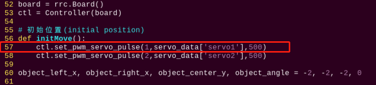
(4) Press “i” on keyboard. When “Insert” appears in the lower left corner, which means it has entered the editing mode.

(5) Modify servo_data['servo1'] in ctl.set_pwm_servo_pulse(1,servo_data['servo1'],500) to 1020, as the figure shown below:
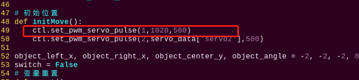
(6) After modification, press “Esc” and then enter “:wq” (Please note that the colon is in front of wq). Then press “Enter” to save and exit the modified content.
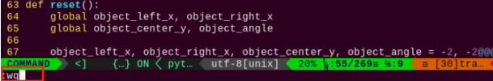
Modify Recognition Color
The color of hurdle is blue. We can stick other colored tapes on hurdle, such as green, and let robot cross hurdle after detecting the green hurdle. The specific steps are as follows:
(1) Refer to the steps (1), (2) and (4) in “Modify Hurdling Position”, enter the program editing interface to find the code framed in the following figure:
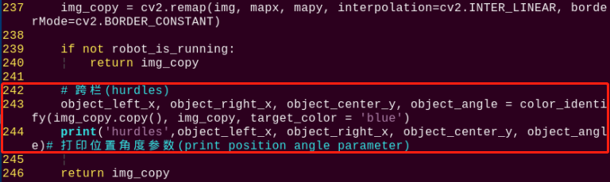
(2) Press “i” on keyboard to enter the editing mode, and then modify blue in object_left_x, object_right_x, object_center_y, object_angle = color_identify(img, img_copy, target_color = 'blue') to green.
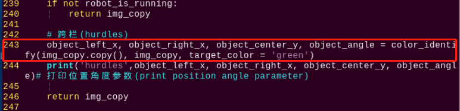
(3) After modification, refer to step (6) in “Modify Hurdling Position” to save the modified code.
9.3.6 Program Analysis
The source code of this program is locate in: /home/pi/TonyPi/Extend/athletics_course/hurdles.py
Import parameter module
| Import module | function |
|---|---|
import sys |
The Python "sys" module has been imported for accessing system-related functions and variables. |
import os |
The Python "os" module has been imported, providing functions and methods for interacting with the operating system. |
import cv2 |
The OpenCV library has been imported for image processing and computer vision-related functionalities |
import time |
The Python "time" module has been imported for time-related functionalities, such as delay operations. |
import math |
The "math" module provides low-level access to mathematical operations, including many commonly used mathematical functions and constants. |
import threading |
Provides an environment for running multiple threads concurrently. |
import np |
The NumPy library has been imported. It is an open-source numerical computing extension for Python, used for handling array and matrix operations. |
import sensor.camera as camera |
Import camera library |
from common import misc |
The "Misc" module has been imported for handling recognized rectangular data. |
import common.ros_robot_controller_sdk as rrc |
The robot's underlying control library has been imported for controlling servos, motors, RGB lights, and other hardware. |
import common.yaml_handle |
Contains functionalities or tools related to processing YAML format files. |
from common.controller import Controller |
Import action group execution library |
Function logic
Based on the implementation effect, the logical flaw chart is as follows:
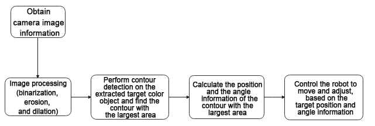
Capture image information through the camera, then process the image, specifically by performing binarization. At the same time, to reduce interference and make the image smoother, perform erosion and dilation operations on the image.
Next, in the color_identify function, calculate the position and angle information of the color block based on the contour with the largest area. Specifically, calculate the left and right boundaries and the center point position of the color block based on the contour’s lowest, leftmost, and rightmost points, as well as the angle of the color block.
Then, based on the target position and angle information, control the robot’s movement and adjustment to orient it towards the target and approach the target.
Program Logic and Related Code Analysis
From the program files, the logical flowchart of the program is as pictured:
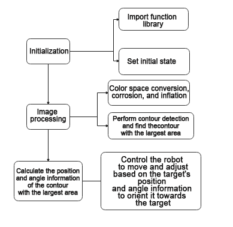
Based on the above diagram, the program’s logical flow mainly consists of image processing and hurdle movement. The following document will be written in accordance with the program logic.
Initialization
(1) Import function library
In this initialization step, the first task is to import the required libraries for subsequent program calls. For details on the imports, refer to “Import parameter module”.
4 5 6 7 8 9 10 11 12 13 14 15 16 17 18 | import os import sys import cv2 import time import math import threading import numpy as np import hiwonder.PID as PID import hiwonder.Misc as Misc import hiwonder.ros_robot_controller_sdk as rrc from hiwonder.Controller import Controller import hiwonder.Camera as Camera import hiwonder.ActionGroupControl as AGC import hiwonder.yaml_handle as yaml_handle |
(2) Set initial state
Set initial state, including the initial position of servo, color threshold, etc.
46 47 48 49 50 | def load_config(): global lab_data, servo_data lab_data = yaml_handle.get_yaml_data(yaml_handle.lab_file_path) servo_data = yaml_handle.get_yaml_data(yaml_handle.servo_file_path) |
Image processing
(1) Image pre-processing
Resizing and Gaussian blur processing of the image.
122 123 | img_resize = cv2.resize(img, (size[0], size[1]), interpolation = cv2.INTER_CUBIC) GaussianBlur_img = cv2.GaussianBlur(img_resize, (3, 3), 0) |
cv2.resize(img_copy, size, interpolation=cv2.INTER_NEAREST) is an operation to resize the image.
The first parameter img_copy is the image to be resized.
The second parameter size is the target size.
The third parameter interpolation is the interpolation method, which is used to determine the pixel interpolation algorithm used for resizing.
cv2.GaussianBlur(frame_resize, (3, 3), 3) applies Gaussian blur to the image.
The first parameter frame_resize is the image to be blurred.
The second parameter (3, 3) is the size of the Gaussian kernel, indicating that the width and height of the kernel are both 3.
The third parameter 3 is the standard deviation of the Gaussian kernel, used to control the degree of blur.
(2) Color space conversion
Convert the BGR image to LAB image.
124 | frame_lab = cv2.cvtColor(GaussianBlur_img, cv2.COLOR_BGR2LAB) |
(3) Binarization processing
Use inRange() function in cv2 library to process binarization.
125 126 127 128 129 130 131 | frame_mask = cv2.inRange(frame_lab, (lab_data[target_color]['min'][0], lab_data[target_color]['min'][1], lab_data[target_color]['min'][2]), (lab_data[target_color]['max'][0], lab_data[target_color]['max'][1], lab_data[target_color]['max'][2])) |
The first parameter frame_lab is inputting image.
The second parameter lab_data[i]['min'][0] is the lower limit of the threshold.
The third parameter lab_data[i]['max'][0] is the upper limit of the threshold.
(4) Corrosion and inflation
132 133 | opened = cv2.morphologyEx(frame_mask, cv2.MORPH_OPEN, np.ones((3,3),np.uint8)) closed = cv2.morphologyEx(opened, cv2.MORPH_CLOSE, np.ones((3,3),np.uint8)) |
eroded = cv2.erode(frame_mask, cv2.getStructuringElement(cv2.MORPH_RECT, (3, 3))) is the operation to perform corrosion on the binary image.
The first parameter frame_mask is the binary image on which morphological operations are to be performed.
The second parameter cv2.getStructuringElement(cv2.MORPH_RECT, (3, 3)) is the structuring element for the corrosion operation. A rectangular structuring element of size (3, 3) is used here.
The dilation function follows the same principle.
(5) Specify the color of the item to obtain angle information
243 | object_left_x, object_right_x, object_center_y, object_angle = color_identify(img_copy.copy(), img_copy, target_color = 'blue') |
(6) Get the contour with the largest area
After completing the above image processing, it is necessary to obtain the contours of the recognized targets. This involves using the findContours() function from the cv2 library.
134 135 | contours = cv2.findContours(closed, cv2.RETR_EXTERNAL, cv2.CHAIN_APPROX_NONE)[-2] areaMax_contour = getAreaMaxContour(contours, area_min=50)[0] |
Take code contours = cv2.findContours(dilated, cv2.RETR_EXTERNAL, cv2.CHAIN_APPROX_NONE)[-2] as example:
The first parameter dilated is inputting image.
The second parameter cv2.RETR_EXTERNAL is the contour retrieval mode.
The third parameter cv2.CHAIN_APPROX_NONE)[-2] is the contour approximation method.
Find the contour with the largest area in the obtained contour. In order to avoid interference, you need to set a minimum value. The target contour is considered valid only if its area is greater than this value.
(7) Detect the hurdle and perform fine-tuning of its position
175 176 177 | if object_center_y >= 0: object_x = object_left_x + (object_right_x - object_left_x)/2 |
Continuously monitor the robot’s operating status (robot_is_running) and the position information of the object (object_center_y) through a loop. If a hurdle is detected (object_center_y >= 0), perform position fine-tuning and action control based on the position and angle information of the object.
(8) If far from the railing, approach quickly
180 181 182 | if object_center_y < 320 and abs(object_x - centreX) < 150: AGC.runActionGroup(go_forward) time.sleep(0.2) |
If far from the railing, call the forward action group to approach quickly
(9) Perform position slightly adjustment and action control based on the object’s position and angle information, approaching the railing, turning, and adjusting left and right
184 185 186 187 188 189 190 191 192 193 194 195 196 197 198 199 200 201 202 203 204 205 | elif 20 <= object_angle < 90: AGC.runActionGroup(go_turn_right) time.sleep(0.2) elif -20 >= object_angle > -90: AGC.runActionGroup(go_turn_left) time.sleep(0.2) elif object_x - centreX > 15: AGC.runActionGroup(right_move) elif object_x - centreX < -15: AGC.runActionGroup(left_move) elif 3 < object_angle < 20: AGC.runActionGroup(turn_right) time.sleep(0.2) elif -5 > object_angle > -20: AGC.runActionGroup(turn_left) time.sleep(0.2) elif 320 <= object_center_y < 450: AGC.runActionGroup(go_forward_one_step) time.sleep(0.5) |
① If the angle is between 20 and 90 degrees, it indicates that the angle needs a slight adjustment to the right, and the robot turns right.
② If the angle is between -90 and -20 degrees, it indicates that the angle needs a slight adjustment to the left, and the robot turns left.
③ If the difference between the object’s center x coordinate (object_x) and the center point (centreX) is greater than 15 pixels, it indicates that the color block is on the right side of the center point. The robot moves to the right.
④ If the difference between the object’s center x coordinate (object_x) and the center point (centreX) is less than -15 pixels, it indicates that the color block is on the left side of the center point. The robot moves to the left.
⑤ If the angle of the color block is between 3 and 20 degrees, it indicates that the angle needs a slight adjustment to the right. The robot turns right.
⑥ If the angle of the color block is between -20 and -5 degrees, it indicates that the angle needs a slight adjustment to the left. The robot turns left.
If the color block’s center point position is between 320 and 430 pixels, it indicates that the robot is relatively close to the railing. The robot slowly approaches forward.
(10) Close to the position, cross the hurdle
207 208 209 210 211 212 213 214 215 216 217 | elif object_center_y >= 450: time.sleep(0.8) if object_center_y >= 450: board.set_buzzer(1900, 0.1, 0.9, 1) for i in range(3): AGC.runActionGroup(go_forward_one_small_step) time.sleep(0.5) AGC.runActionGroup('hurdles') time.sleep(0.5) object_center_y = -1 |
① If the color block’s center point position is greater than or equal to 430 pixels, it indicates that the robot is close to the railing. Execute the hurdle-crossing action and reset object_center_y to -1 to indicate that the hurdle-crossing is completed.
9.4 Athletics Performance
9.4.1 Getting Ready
Place the map on a flat and smooth surface and set the stair in the corresponding position on the map.
The specific placement method for the map and tool can refer to the video and file in 9.1.4 Map Placement.
9.4.2 Working Principle
As we all know, a robot is a device imitating human. In this lesson, we combine “Climb Stair” and “Hurdle” to simulate robots to learn human athletics sport.
The color is recognized through Lab color space firstly. Then convert RGB color into Lab color space, and proceed binarization, and dilation and erosion process to obtain the contour of the target color. Mark the target color with blue line, and obtain the coordinate parameter of the target to complete the color recognition.
Then process the servo on the pan-tilt of the head after recognition, the x and y coordinates of the center point of the image are used as set values, and the currently acquired x and y coordinates are used as input values to update the pid.
Then calculate according to the feedback of the line position in the image, and finally make the robot move along the line through the change of position, so as to control the robot to walk along the black line.
Then, if you encounter step or hurdle in the middle, please refer to “Lesson 2 Climb step” and “Lesson 3 Hurdle”.
9.4.3 Operation Steps
Note
The entered command must pay attention to case sensitivity and space.
(1) Turn on the robot and connect to Raspberry Pi desktop with VNC.
(2) Click the icon  on the upper left corner of the desktop to open command line terminal.
on the upper left corner of the desktop to open command line terminal.
(3) Enter the following command and press Enter to go to the directory of the game program:
cd /home/pi/TonyPi/Extend/athletics_course/
(4) Enter command and press Enter to start the game:
python3 athletics_perform.py
(5) If want to exit the game, press “Ctrl+C” in the LX terminal. Please try multiple times if fail to exit.
9.4.4 Project Outcome
Note
In this game, the robot’s hands can not be replaced with novel robotic hands. Otherwise, it will change robot’s center of mass and affect experience.
The robot needs to be placed in a smooth and flat surface to avoid falling.
The background color does not be similar to red, black and blue to get better experience.
The height of the step and hurdle should be kept at 1cm, and the two ends of step need to be affixed with the red tape.
Place the map on a flat and smooth surface, and place step and hurdle on the corresponding position on the map. Then place the robot on the black line of map.
After starting this game, the robot will walk along the black line. When encounter a step, it will automatically go up and down step. When encounters a hurdle, it will go over it.
9.4.5 Function Extension
Modify Climbing and Hurdling Position
After the program is started, if the realization effect of going up and down step or hurdling is not good enough, we can change the distance where the robot starts performing action.
The program defaults that the robot starts going up and down step or hurdling at a distance of 1000 from the line. If the distance needs to be closer, the data should be decreased; if the distance needs to be farther, the data should be increased. This section takes robot starts climbing step or hurdling at a distance of 1020 as example. Please refer to the following steps:
(1) Input the following command and press Enter to go to the directory of game program:
cd /home/pi/TonyPi/Extend/athletics_course/
(2) Enter command and press Enter to open the game programming file:
vim athletics_perform.py
(3) Find the code framed in the following figure:
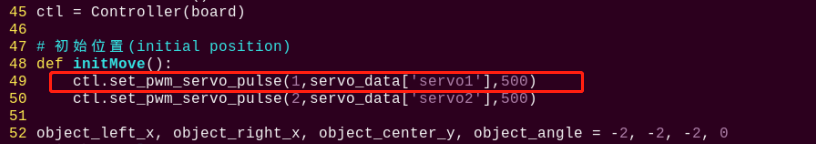
(4) Press “i” on keyboard. When “Insert” appears in the lower left corner, which means it has entered the editing mode.
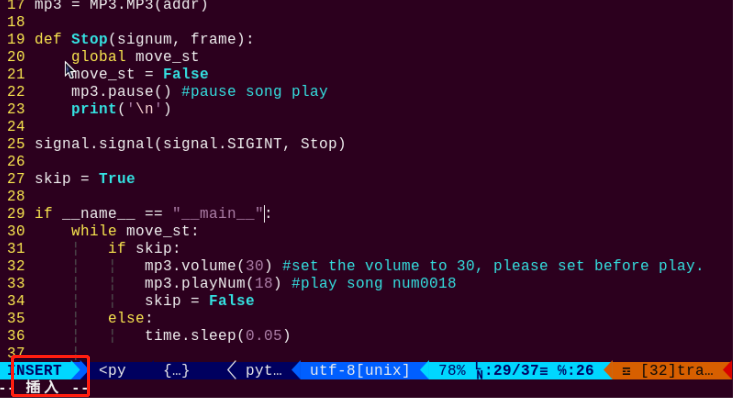
(5) Modify servo_data['servo1'] in ctl.set_pwm_servo_pulse(1,servo_data['servo1'],500) to 1020, as shown in the follows:
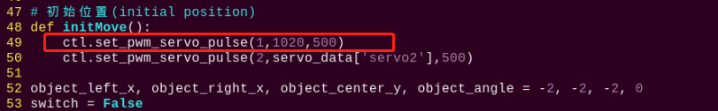
(6) After modification, press “Esc” and then enter “:wq” (Please note that the colon is in front of wq). Then press “Enter” to save and exit the modified content.
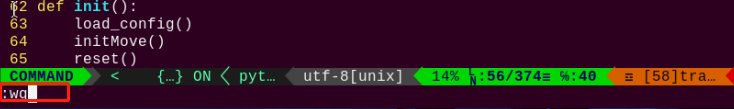
Modify Line Color
It is black line on the provided map. After starting program, the robot will walk along the black line. You can change the line with other colored tape, for example, green tape is used to affix on the map and the robot is set to walk along the green line. The specific steps are as follows:
(1) Refer to steps (1), (2), (4) in “Modify Climbing and Hurdling Position” to enter the program editing interface and find the code framed in the figure below:
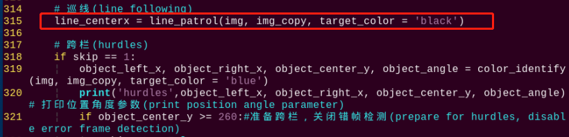
(2) Press “i” to enter the editing mode. Modify black in line_centerx = line_patrol(img, img_copy, target_color = 'black') to green.
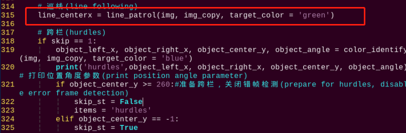
(3) After modification, refer to step (6) in “Modify Climbing and Hurdling Position” to save the modified code.
9.4.6 Program Analysis
The source code of this program is locate in: /home/pi/TonyPi/Extend/athletics_course/athletics_perform.py
Import parameter module
| Import module | function |
|---|---|
import sys |
The Python "sys" module has been imported for accessing system-related functions and variables. |
import os |
The Python "os" module has been imported, providing functions and methods for interacting with the operating system. |
import cv2 |
The OpenCV library has been imported for image processing and computer vision-related functionalities |
import time |
The Python "time" module has been imported for time-related functionalities, such as delay operations. |
import math |
The "math" module provides low-level access to mathematical operations, including many commonly used mathematical functions and constants. |
import threading |
Provides an environment for running multiple threads concurrently. |
import np |
The NumPy library has been imported. It is an open-source numerical computing extension for Python, used for handling array and matrix operations. |
import sensor.camera as camera |
Import camera library |
from common import misc |
The "Misc" module has been imported for handling recognized rectangular data. |
import common.ros_robot_controller_sdk as rrc |
The robot's underlying control library has been imported for controlling servos, motors, RGB lights, and other hardware. |
import common.yaml_handle |
Contains functionalities or tools related to processing YAML format files. |
from common.controller import Controller |
Import action group execution library |
Function logic
Based on the implementation effect, the logical flaw chart is as follows:
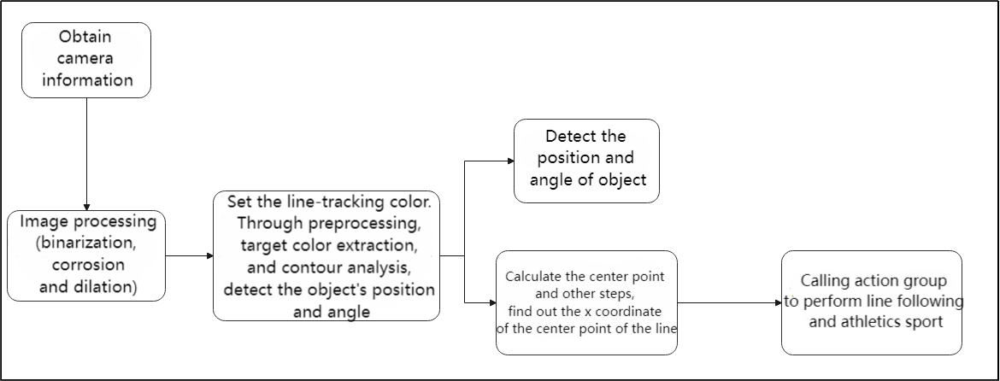
Capture image information through the camera, then process the image, specifically by performing binarization. At the same time, to reduce interference and make the image smoother, perform erosion and dilation operations on the image.
Next, in the color_identify function, calculate the position and angle information of the color block based on the contour with the largest area. Calculate the left boundary x-coordinate, right boundary x-coordinate, center point y-coordinate, and angle of the object based on the vertex information of the largest contour.
Then, based on the target position and angle information, control the robot’s movement and adjustment to orient it towards the target and achieve athletics.
Program Logic and Related Code
From the program files, the logical flowchart of the program is as pictured:
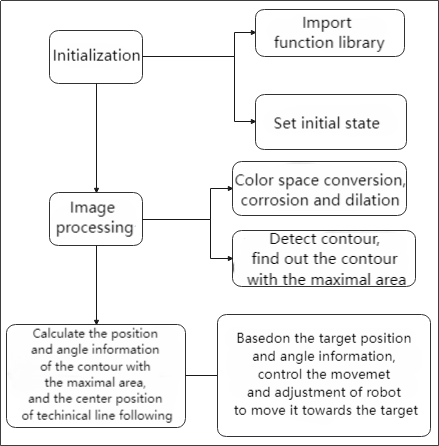
Based on the above diagram, the program’s logical flow mainly consists of image processing and hurdle movement. The following document will be written in accordance with the program logic.
Initialization
(1) Import function library
In this initialization step, the first task is to import the required libraries for subsequent program calls. For details on the imports, refer to “Import parameter module”.
4 5 6 7 8 9 10 11 12 13 14 15 16 | import os import sys import cv2 import time import math import threading import numpy as np import hiwonder.ros_robot_controller_sdk as rrc from hiwonder.Controller import Controller import hiwonder.Misc as Misc import hiwonder.PID as PID import hiwonder.ActionGroupControl as AGC import hiwonder.yaml_handle as yaml_handle |
(2) Set initial state
Set initial state, including the initial position of servo, color threshold, etc.
36 37 38 39 40 | def load_config(): global lab_data, servo_data lab_data = yaml_handle.get_yaml_data(yaml_handle.lab_file_path) servo_data = yaml_handle.get_yaml_data(yaml_handle.servo_file_path) |
Image processing
(1) Image pre-processing
Resizing and Gaussian blur processing of the image.
107 108 | frame_resize = cv2.resize(img_draw, size, interpolation=cv2.INTER_NEAREST) frame_gb = cv2.GaussianBlur(frame_resize, (3, 3), 3) |
cv2.resize(img_copy, size, interpolation=cv2.INTER_NEAREST) is an operation to resize the image.
The first parameter img_copy is the image to be resized.
The second parameter size is the target size.
The third parameter interpolation is the interpolation method, which is used to determine the pixel interpolation algorithm used for resizing.
cv2.GaussianBlur(frame_resize, (3, 3), 3) applies Gaussian blur to the image.
The first parameter frame_resize is the image to be blurred.
The second parameter (3, 3) is the size of the Gaussian kernel, indicating that the width and height of the kernel are both 3.
The third parameter 3 is the standard deviation of the Gaussian kernel, used to control the degree of blur.
Convert the BGR image to LAB image.
115 | frame_lab = cv2.cvtColor(blobs, cv2.COLOR_BGR2LAB) |
(2) Binarization processing
Use inRange() function in cv2 library to process binarization.
117 118 119 120 121 122 123 | frame_mask = cv2.inRange(frame_lab, (lab_data[target_color]['min'][0], lab_data[target_color]['min'][1], lab_data[target_color]['min'][2]), (lab_data[target_color]['max'][0], lab_data[target_color]['max'][1], lab_data[target_color]['max'][2])) |
The first parameter frame_lab is inputting image.
The second parameter lab_data[i]['min'][0] is the lower limit of the threshold.
The third parameter lab_data[i]['max'][0] is the upper limit of the threshold.
(3) Corrosion and inflation
124 125 | opened = cv2.morphologyEx(frame_mask, cv2.MORPH_OPEN, np.ones((6, 6), np.uint8)) closed = cv2.morphologyEx(opened, cv2.MORPH_CLOSE, np.ones((6, 6), np.uint8)) |
eroded = cv2.erode(frame_mask, cv2.getStructuringElement(cv2.MORPH_RECT, (3, 3))) is the operation to perform corrosion on the binary image.
The first parameter frame_mask is the binary image on which morphological operations are to be performed.
The second parameter cv2.getStructuringElement(cv2.MORPH_RECT, (3, 3)) is the structuring element for the corrosion operation. A rectangular structuring element of size (3, 3) is used here.
The dilation function follows the same principle.
(4) Specify the color of the item to obtain angle information and set the line-following color
315 | line_centerx = line_patrol(img, img_copy, target_color = 'black') |
(5) Get the contour with the largest area
After completing the above image processing, it is necessary to obtain the contours of the recognized targets. This involves using the findContours() function from the cv2 library.
126 127 | cnts = cv2.findContours(closed , cv2.RETR_EXTERNAL, cv2.CHAIN_APPROX_TC89_L1)[-2] cnt_large, area = getAreaMaxContour(cnts) |
Take code contours = cv2.findContours(dilated, cv2.RETR_EXTERNAL, cv2.CHAIN_APPROX_NONE)[-2] as example:
The first parameter dilated is inputting image.
The second parameter cv2.RETR_EXTERNAL is the contour retrieval mode.
The third parameter cv2.CHAIN_APPROX_NONE)[-2] is the contour approximation method.
Find the contour with the largest area in the obtained contour. In order to avoid interference, you need to set a minimum value. The target contour is considered valid only if its area is greater than this value.
129 130 | rect = cv2.minAreaRect(cnt_large) box = np.int0(cv2.boxPoints(rect)) |
(6) Detect the hurdle and perform fine-tuning of its position
223 | if object_center_y >= 300: |
Continuously monitor the robot’s operating status (robot_is_running) and the position information of the object (object_center_y) through a loop. If a hurdle is detected (object_center_y >= 0), perform position fine-tuning and action control based on the position and angle information of the object.
If far from the railing, approach quickly
319 | object_left_x, object_right_x, object_center_y, object_angle = color_identify(img, img_copy, target_color = 'blue') |
Perform position slightly adjustment, line following, and execute actions such as crossing hurdles or ascending/descending stairs based on the object’s position and angle
226 227 228 229 230 231 232 233 234 235 236 237 238 239 240 241 242 243 244 245 246 247 248 249 250 251 252 253 254 255 256 257 258 259 260 261 262 263 264 265 266 267 268 269 270 271 272 273 274 275 276 277 | if 20 <= object_angle < 90: AGC.runActionGroup(go_turn_right) time.sleep(0.2) elif -20 >= object_angle > -90: AGC.runActionGroup(go_turn_left) time.sleep(0.2) elif line_centerx - x_center > 15: AGC.runAction(right_move) elif line_centerx - x_center < -15: AGC.runAction(left_move) elif 3 < object_angle < 20: AGC.runActionGroup(turn_right) time.sleep(0.2) elif -5 > object_angle > -20: AGC.runActionGroup(turn_left) time.sleep(0.2) elif 300 <= object_center_y < 430: AGC.runActionGroup(go_forward_one_step) time.sleep(0.2) elif object_center_y >= 430: time.sleep(0.5) if object_center_y >= 430: board.set_buzzer(1900, 0.1, 0.9, 1) AGC.runActionGroup(go_forward_one_step) time.sleep(0.5) AGC.runActionGroup(go_forward_one_step) time.sleep(0.5) if items == 'hurdles': AGC.runActionGroup('hurdles') skip_st = True strp_up = True items = None elif items == 'stairway': if strp_up: AGC.runActionGroup('climb_stairs') strp_up = False else: for i in range(2): AGC.runActionGroup(go_forward_one_step) time.sleep(0.2) AGC.runActionGroup('down_floor') strp_up = True items = None skip_st = True time.sleep(0.5) object_center_y = -1 |
① If the object’s angle is between 20 and 90 degrees, execute the go_turn_righ action group and delay for 0.2 seconds.
② If the object’s angle is between -20 and -90 degrees, execute the go_turn_left action group and delay for 0.2 seconds.
③ If the center X coordinate of the line differs from the center X coordinate by more than 15, execute the right_move action.
④ If the center X coordinate of the line differs from the center X coordinate by less than -15, execute the left_move action.
⑤ If the object’s angle is between 3 and 20 degrees, execute the turn_righ action group and delay for 0.2 seconds.
⑥ If the object’s angle is between -5 and -20 degrees, execute the turn_left action group and delay for 0.2 seconds.
⑦ If the object center’s Y coordinate is between 300 and 420 degrees, execute the go_forward_one_step action group and delay for 0.2 seconds.
⑧ If the object’s center Y coordinate is greater than or equal to 430, it indicates proximity to position, allowing for crossing hurdles or ascending/descending stairs:
⑨ Delay for 0.5 seconds
⑩ If the object’s center Y coordinate is still greater than or equal to 430, activate the buzzer to sound and execute the go_forward_one_step action group to move forward one step, with a delay of 0.5 seconds.
⑪ If the value of the items variable is hurdles, indicating it is a hurdle type: execute the hurdles action group.
⑫ Then set the skip_st and strp_up variables to True. Set the items variable to None.
⑬ If the value of the items variable is stairway, indicating it is a stairway type:
⑭ If the strp_up variable is True, indicating it is an ascending stairs type: execute the climb_stairs action group.
⑮ Set the strp_up variable to False. Otherwise, indicating it is a descending stairs type: execute the go_forward_one_step action group to move forward one step.
⑯ Delay for 0.2 seconds.
⑰ Perform down_floor action group.
⑱ Set the strp_up variable to True. Set the items variable to None. Set the skip_st variable to True.
⑲ Delay for 0.5 seconds.
⑳ Set the object’s center Y coordinate to -1.
(7) Line patrol
282 283 284 285 286 287 288 289 290 291 292 293 | elif line_st and line_centerx != 8888: if abs(line_centerx - x_center) <= 20: AGC.runAction(go_forward) time.sleep(0.2) elif line_centerx - x_center > 20: AGC.runAction(go_turn_right) time.sleep(0.2) elif line_centerx - x_center < -20: AGC.runAction(go_turn_left) time.sleep(0.2) else: time.sleep(0.01) |
① If the line_st variable is true and the center X coordinate of the line is not equal to 8888, indicating line following:
② If the difference between the center X coordinate of the line and the center X coordinate is less than or equal to 20, execute the go_forward action and delay for 0.2 seconds.
③ If the difference between the center X coordinate of the line and the center X coordinate is greater than 20, execute the go_turn_right action and delay for 0.2 seconds.
④ If the difference between the center X coordinate of the line and the center X coordinate is less than -20, execute the go_turn_left action and delay for 0.2 seconds.
⑤ Otherwise, delay for 0.01 seconds.